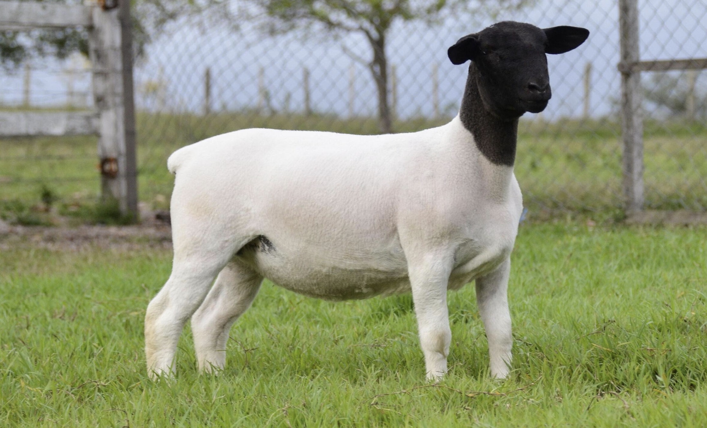

Bellavista
Criadero Dorper
Cría y selección de ovinos en Santander, Colombia.
SANTANDER, COLOMBIA
BIENVENIDOS A BELLAVISTA
Una visión de la cría ovina
Bellavista es un proyecto ganadero dedicado a la cría, selección y desarrollo de ovinos, con especial interés en la raza Dorper.
Conoce nuestro proyecto →
NUESTROS ANIMALES
Razas y líneas de cría
Conoce las razas que forman parte de nuestro proyecto ganadero y sus características.
NUESTRO CATÁLOGO
Conoce nuestros ejemplares
Información individual de los animales del criadero, sus características y disponibilidad.
Precios por consultar directamente con Bellavista.
GENÉTICA
Selección y desarrollo genético
La selección de nuestros animales contempla características productivas, reproductivas y de adaptación.
Criterios de selección
Estructura corporal, crecimiento, características reproductivas y adaptación.
Registros individuales
Identificación, fechas de nacimiento, genealogía disponible y evolución de peso.
Desarrollo del rebaño
Seguimiento de los animales y evaluación de sus características.
CRÍA Y MANEJO
El cuidado de nuestros animales
Alimentación
Manejo nutricional según las necesidades y etapas de desarrollo de los animales.
Instalaciones
Espacios destinados al alojamiento, manejo y bienestar del rebaño.
Madres y crías
Seguimiento de la reproducción, gestación, nacimiento y lactancia.
Crecimiento
Observación del desarrollo de los ejemplares durante sus diferentes etapas.
NUESTRO CRIADERO

Conoce Bellavista
Bellavista nace como un proyecto dedicado a la cría ovina, con una visión de crecimiento, aprendizaje y desarrollo ganadero.
BELLAVISTA
Artículos y novedades
Un espacio para compartir nacimientos, nuevos ejemplares, avances del criadero y experiencias de manejo.
Extras
Foto del empaque
Próximamente
Próximamente
100 % natural
Abono orgánico ovino
Elaborado con estiércol compostado de nuestros ovinos Dorper. Aporta materia orgánica al suelo de jardines, huertas y macetas.
Consultar disponibilidad
CONTACTO
Conversemos sobre nuestros animales
Si deseas conocer nuestros ejemplares, su disponibilidad o recibir información del criadero, puedes comunicarte con nosotros.
Ubicación
La Mesa De Los Santos, Santander